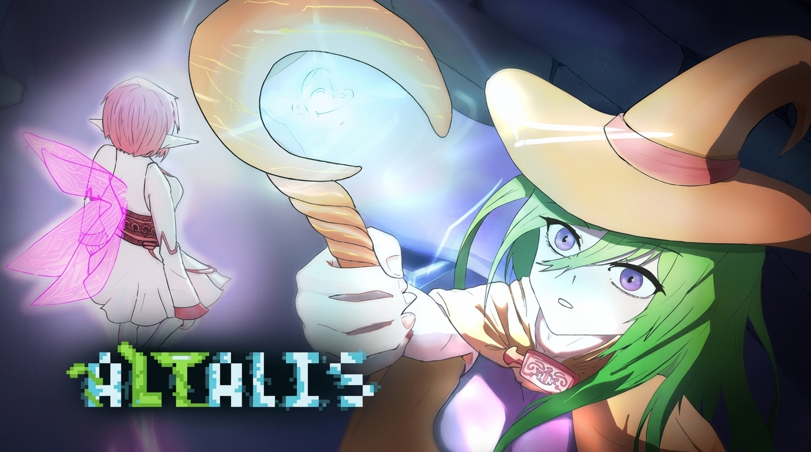

Studio & Scale
Fiz Studio (6 Members)
Genre
2D Metroidvania Puzzle
Release
Steam Public Demo
Project Manager & Unity Programmer
Altalis
A puzzle Metroidvania built around systemic world exploration. I led our six-person team to a public Steam demo and programmed the core gameplay systems in C#—letting players slow time, copy-paste world blocks on a grid, and reset puzzles instantly without reloading scenes.
- Selection Mode & Object Manipulation Built a 0.3x time-dilation grid mode where players select, copy, cut, or fuse physical blocks into launchable projectiles with real-time collision and mana checks.
- Two-Tier Save & Instant Undo System Separated campfire checkpoints from local puzzle snapshots so players can roll back a room or recover from hazards in 1.5s without a scene reload.
- Metroidvania World & Team Production Programmed room-discovery mapping, ability-gated portals, and a radial skill wheel while managing sprints across art, design, and code.
- Unity
- C#
- Project Management
- Systems Design